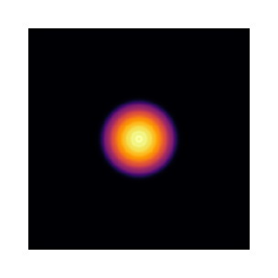
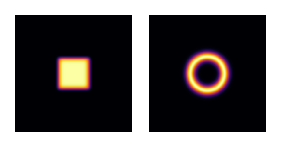
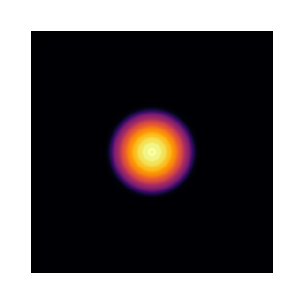
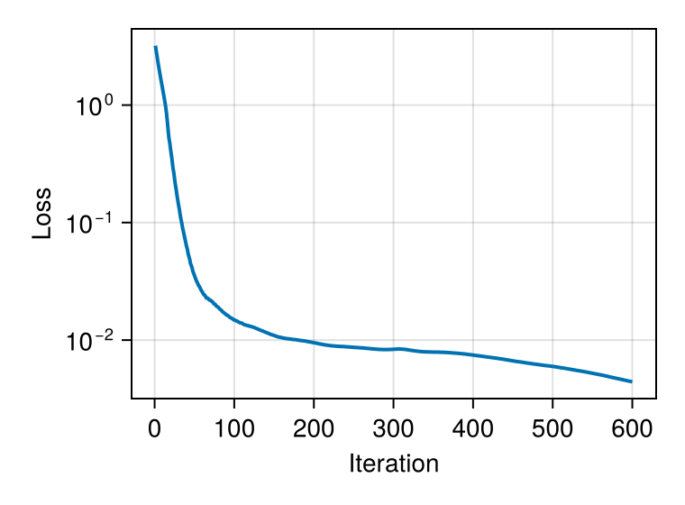
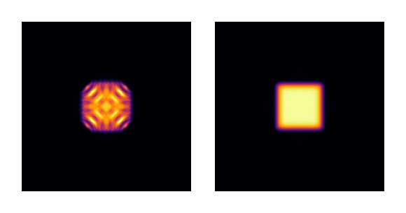
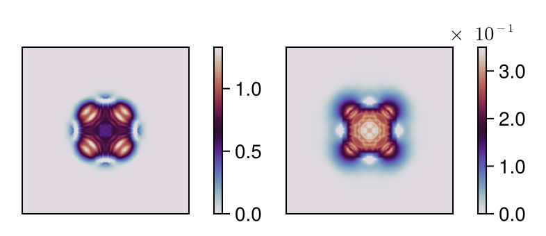
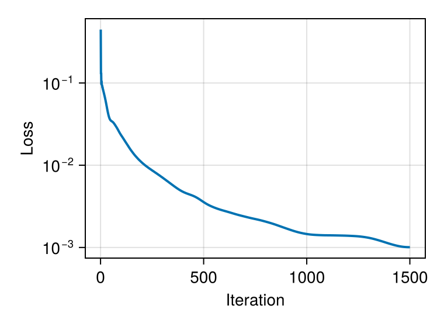
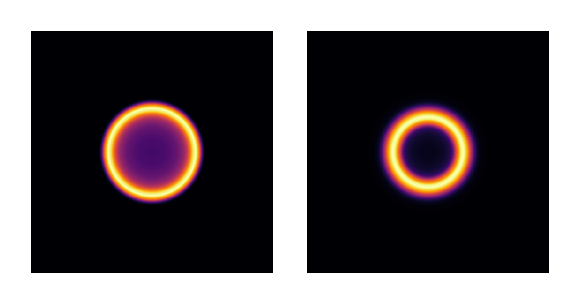
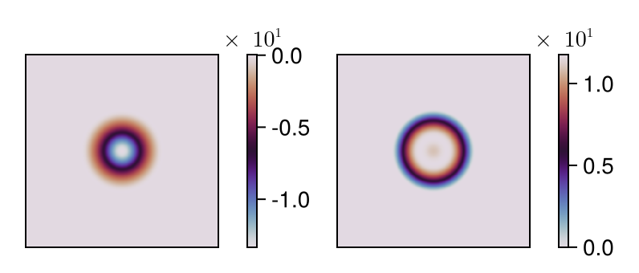

Multimode Intensity Shaping with Cascaded DOEs
This tutorial demonstrates intensity shaping of highly multimode light sources using cascaded diffractive optical elements (DOEs). We optimize two phase-only DOEs embedded in a glass substrate to transform 105 Laguerre-Gaussian modes into target intensity distributions (square and ring). This approach reproduces the experimental configuration from Ref. [2], where DOEs are integrated on the input and output faces of a glass element.
Physical Context
Multimode light sources such as multimode fibers or filtered laser diodes exhibit complex spatial intensity patterns due to the incoherent superposition of many modes. Shaping these sources is challenging because each mode must be individually transformed to contribute constructively to the desired target intensity. This problem is relevant for laser materials processing, optical manipulation, and beam homogenization applications.
The approach demonstrated here builds on algorithmic methods for holographic beam shaping of partially coherent light [1,2], using gradient-based optimization to find optimal phase patterns that transform each mode appropriately. While the original work addressed systems with thousands of modes (LP modes from step-index fibers), we use 105 Laguerre-Gaussian modes here for computational efficiency. LG modes form a complete basis for graded-index fibers and provide a good approximation for demonstrating the multimode shaping principle.
References:
[1]. N. Barré and A. Jesacher, "Holographic beam shaping of partially coherent light," Optics Letters 47, 425-428 (2022).
[2]. N. Barré and A. Jesacher, "Beam shaping of highly multimode sources with cascaded diffractive optical elements," Procedia CIRP 111, 566-570 (2022).
using FluxOptics, Zygote, CairoMakieTarget Intensity Profiles
We define two target intensity distributions: a square flat-top and a ring. These are constructed using smooth super-Gaussian functions to avoid sharp discontinuities that would be difficult to achieve with phase-only modulation.
function square_intensity(c0::Real, n::Integer)
function intensity(x, y)
exp(-((x/c0)^n + (y/c0)^n))
end
intensity
end
function ring_intensity(r0::Real, w0::Real)
function intensity(x, y)
r = sqrt(x^2 + y^2)
exp(-((r-r0)/w0)^2)
end
intensity
endMultimode Source: Laguerre-Gaussian Basis
We create a highly multimode source by superposing 105 Laguerre-Gaussian modes. LG modes form a complete basis for graded-index fibers and provide a tractable representation for multimode beam shaping. The modes are generated with orders satisfying 2p + |l| ≤ 13, where p is the radial index and l is the azimuthal index.
ns = (512, 512)
ds = (1.0, 1.0)
λ = 0.532
xv, yv = spatial_vectors(ns, ds);
w_in = 25.0
n_order = 13
lg_orders = [(p, l) for p in 0:(n_order ÷ 2) for l in (2 * p - n_order):(n_order - 2 * p)]
input_modes = stack(order -> LaguerreGaussian(w_in, order...)(xv, yv), lg_orders; dims = 3)
u0 = ScalarField(input_modes, ds, λ)
n_modes = size(u0, 3);
We have generated 105 Laguerre-Gaussian modes spanning a wide range of mode orders. Each mode is individually normalized, and their incoherent sum creates a smooth cylindrical intensity pattern.
Target Definitions
We define normalized target intensities for both the square and ring geometries. The normalization ensures that the total power in the target matches the input (n_modes since each input mode is normalized to unit power).
r0 = 75.0
c0 = 70.0
w0 = 20.0
n = 10
square_target = square_intensity(c0, n).(xv, yv')
ring_target = ring_intensity(r0, w0).(xv, yv')
square_target .*= n_modes / sum(square_target)
ring_target .*= n_modes / sum(ring_target);
visualize(hcat((square_target, ring_target)), real; colormap=:inferno, height=120)
The square target uses a super-Gaussian profile of side c₀=70 μm with exponent n=10 for smooth edges, while the ring uses a radial Gaussian centered at radius r₀=75 μm with width w₀=20 μm.
Optical System: Cascaded DOEs
The optical system reproduces the configuration from Ref. [2]: two phase-only DOEs embedded in a glass substrate (n0=1.5), one on the input face and one on the output face. The DOEs are separated by 600 μm of glass, followed by 300 μm of free-space propagation to the target plane.
The glass thickness is larger than in the original article (which used ~2000 LP modes from a step-index fiber) because with only 105 LG modes, the beam is less multimode and diverges less rapidly. The increased propagation distance compensates for this, providing sufficient mode mixing between the two DOEs.
This cascaded configuration provides two degrees of freedom for phase modulation, significantly improving the quality of achievable intensity transformations compared to a single DOE [2].
source = ScalarSource(u0);
z12 = 600.0 # Distance between DOEs (in glass)
z = 300.0 # Distance to target plane (in air)
n0 = 1.5 # Refractive index of glass
prop_glass = ASProp(u0, z12; n0 = n0)
prop_air = ASProp(u0, z)
doe1 = TeaDOE(u0, n0-1.0; trainable = true, buffered = true)
doe2 = TeaDOE(u0, n0-1.0; trainable = true, buffered = true)
pb = FieldProbe()
system = source |> doe1 |> prop_glass |> pb |> doe2 |> prop_air;The TeaDOE components model thin diffractive elements with phase modulation φ(x,y) = 2π Δn h(x,y) / λ, where h(x,y) is the height profile and Δn = n₀-1 is the refractive index contrast. A FieldProbe is inserted between the two DOEs to monitor the intermediate intensity distribution, which helps verify that the angular spectrum propagation remains physically reasonable throughout optimization.
Initial output (no optimization)
uf = system().out;
visualize(uf, intensity; colormap =:inferno, height=120)
Optimization Setup
We use the FISTA algorithm with different regularization strategies for each target. For both targets, heights are clamped to ensure fabrication feasibility.
square_metric = SquaredIntensityDifference((u0, I_square));
ring_metric = SquaredIntensityDifference((u0, I_ring));
loss_square(m) = sum(square_metric(m().out))
loss_ring(m) = sum(ring_metric(m().out));Square Target Optimization
For the square target, we use FISTA with TV-norm regularization to produce smooth, fabricable DOE profiles. The TV-norm (Total Variation) penalizes sharp gradients in the height profile, naturally enforcing smoothness. We also clamp heights to [0, 1.5] μm to maintain reasonable fabrication constraints.
rule = ProxRule(Fista(30.0), ClampProx(0, 1.5) ∘ TVProx(3e-2))
opt_square = FluxOptics.setup(rule, system)
foreach(doe -> fill!(doe, 0), [doe1, doe2]);
losses_square = []
for iter in 1:600
val, grads = withgradient(loss_square, system)
FluxOptics.update!(opt_square, system, grads[1])
push!(losses_square, val)
end
fig_loss = Figure(size = (380, 280))
ax = Makie.Axis(fig_loss[1, 1],
yscale = log10, xlabel = "Iteration", ylabel = "Loss")
lines!(ax, losses_square; linewidth = 2)
The loss decreases over 600 iterations. TV-norm regularization produces smooth DOE profiles while maintaining good target fidelity. The loss curve suggests potential for further improvement with additional iterations, though the current result already achieves good square beam shaping.
Optimized result for square target
We visualize both the intermediate field (between DOEs) and the final output to verify that the propagation remains well-behaved throughout the system.
uf, probes = system()
u1 = probes[pb]
visualize(hcat((u1, uf)), intensity; colormap =:inferno, height=120)
Optimized DOE height profiles
visualize(hcat((doe1, doe2)), real;
show_colorbars = true, colormap=:twilight, height=120)
The TV-norm regularization produces smooth DOE height profiles with gentle spatial gradients, ideal for fabrication. Heights span approximately [0, 1.5] μm, remaining within the clamped bounds. The second DOE shows finer features that complement the first DOE's coarser structure.
Ring Target Optimization
For the ring target, we use basis projection to enforce cylindrical symmetry. The basis functions are radial polynomials multiplied by a Gaussian envelope, guaranteeing that the optimized DOE profile respects the target's rotational symmetry. While these basis functions are not orthogonal, they provide sufficient expressiveness for this application.
function radial_polynomial(D)
function poly(x, y, p)
r2 = x^2 + y^2
r02 = (D/2)^2
r2 <= r02 ? (1-(r2/r02)^p)*exp(-r2/(r02/2.5)) : 0.0
end
poly
end
n_basis = 12
D = 3*r0
basis_functions = make_spatial_basis(radial_polynomial(D), ns, ds, (1:n_basis))
doe1_wrap = BasisProjectionWrapper(doe1, basis_functions, zeros(n_basis))
doe2_wrap = BasisProjectionWrapper(doe2, basis_functions, zeros(n_basis))
system = source |> doe1_wrap |> prop_glass |> pb |> doe2_wrap |> prop_air;The BasisProjectionWrapper constrains the DOE heights to lie in the span of the radial basis functions. Optimization now occurs in the low-dimensional coefficient space (12 parameters per DOE) rather than the full pixelwise space (512×512 per DOE), naturally enforcing smoothness and cylindrical symmetry.
rule = Fista(2.0)
foreach(doe -> fill!(doe, 0), [doe1_wrap, doe2_wrap])
opt_ring = FluxOptics.setup(rule, system);
losses_ring = []
for iter in 1:1500
val, grads = withgradient(loss_ring, system)
FluxOptics.update!(opt_ring, system, grads[1])
push!(losses_ring, val)
end
The optimization converges over 1500 iterations, with some oscillations characteristic of the non-convex landscape. The reduced FISTA step size (2.0 vs 30.0 for the square) provides more stable convergence for this geometrically constrained problem.
Optimized result for ring target
uf, probes = system()
u1 = probes[pb]
visualize(hcat((u1, uf)), intensity; colormap=:inferno, height=120)
Final DOE height profiles
visualize(hcat((doe1, doe2)), real;
show_colorbars=true, colormap=:twilight, height=120)
The DOE profiles exhibit perfect cylindrical symmetry enforced by the radial basis. Heights range approximately from -14 μm to +10 μm across the two DOEs, with perfectly smooth radial variations. The basis projection approach trades some degrees of freedom for guaranteed fabricability and symmetry preservation.
Key Observations
Regularization strategies: Different targets benefit from different optimization approaches. TV-norm works well for the square target, producing smooth profiles with good edge definition. Basis projection is essential for the ring target, guaranteeing cylindrical symmetry that would be difficult to maintain with pixelwise optimization.
Step size tuning: The FISTA step size must be adjusted based on the problem characteristics. Larger steps (30.0) work for TV-regularized optimization, while smaller steps (2.0) provide stable convergence in the basis-projected case.
Fabrication constraints: Both approaches produce fabricable DOEs. TV-norm naturally smooths pixelwise solutions, while basis projection inherently produces smooth profiles. Height ranges differ (0-1.5 μm for square, ±14/10 μm for ring) depending on the regularization and clamping strategy.
Multimode handling: The algorithm successfully optimizes transformations for 105 incoherent modes simultaneously, demonstrating scalability to highly multimode sources. The intermediate field probe confirms that angular spectrum propagation remains physically reasonable throughout optimization.
Non-convex optimization: Despite the non-convex optimization landscape for both problems, appropriate regularization and step sizes yield good convergence.
Basis choice: The radial polynomial basis (multiplied by Gaussian envelope) provides sufficient expressiveness for ring shaping despite lacking orthogonality. Zernike polynomials or other orthogonal bases could potentially lead to faster convergence and better interpretability of the optimized coefficients.
This page was generated using Literate.jl.